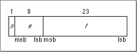
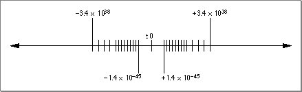
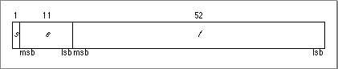
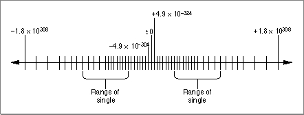
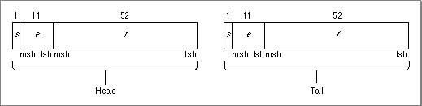
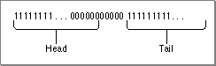

Legacy Document
Important: The information in this document is obsolete and should not be used for new development.
Important: The information in this document is obsolete and should not be used for new development.


Formats
This section shows the three numeric data formats: single, double, and double-double. These are pictorial representations and might not reflect the actual byte order in any particular implementation.Each of the diagrams on the following pages is followed by a table that gives the rules for evaluating the number. In each field of each diagram, the leftmost bit is the most significant bit (msb) and the rightmost is the least significant bit (lsb). Table 2-4 defines the symbols used in the diagrams.
Table 2-4 Symbols used in format diagrams Symbol Description v Value of number s Sign bit e Biased exponent (exponent + bias) f Fraction (significand without leading bit) Single Format
The 32-bit single format is divided into three fields having 1, 8, and 23 bits (see
Figure 2-7).
The interpretation of a single-format number depends on the values of the exponent field (e) and the fraction field (f), as shown in Table 2-5.
Values of single-format numbers (32 bits) If biased exponent e is: And fraction f is: Then value v is: And the class of v is: (any) Normalized Denormalized Zero Infinity v is a NaN NaN Figure 2-8 shows the range and density of the real numbers that can be represented as single-format floating-point numbers using normalized and denormalized values. The vertical marks indicate the relative density of the numbers that can be represented. As explained in the section "Normalized Numbers" on page 2-5, the number of representable values gets more dense closer to 0.
Figure 2-8 Single-format floating-point numbers on the real number line

Double Format
The 64-bit double format is divided into three fields having 1, 11, and 52 bits (see
Figure 2-9).
The interpretation of a double-format number depends on the values of the exponent field (e) and the fraction field (f), as shown in Table 2-6.
Values of double-format numbers (64 bits) If biased exponent e is: And fraction f is: Then value v is: And the class of v is: (any) Normalized Denormalized Zero Infinity v is a NaN NaN Figure 2-10 shows the range and density of the real numbers that can be represented as double-format floating-point numbers using normalized and denormalized values. The vertical marks indicate the relative density of the numbers that can be represented. As explained in the section "Normalized Numbers" on page 2-5, the number of representable values gets more dense closer to 0.
Figure 2-10 Double-format floating-point values on the real number line

Double-Double Format
The 128-bit double-double format is made up of two double-format numbers (see Figure 2-11).Figure 2-11 Double-double format

The value of a double-double number is the sum of its head and tail components. These two components are both double numbers, and therefore the value of each component is determined as shown in Table 2-6. It is recommended that the tail's exponent be at least 54 less than the head's exponent. Numeric operations that produce double-double results always produce numbers in this form.
The requirement that the tail's exponent be at least 54 less than the head's exponent guarantees that the significand of the tail is more or less concatenated to the significand of the head (which is 53 bits long) when the two values are added together. For example, if the head component's exponent is , the tail component's exponent can be no greater than , so that in the value represented by this double-double format number, the head represents the first 53 binary digits and the tail represents the remaining digits.
- IMPORTANT
- It is possible, but not recommended, to create a double-double format that does not follow this form. If you do not follow this form when creating a double-double number, the results are unpredictable.

Note that the difference between the exponent values may be greater than 54 and that the head and the tail can have different signs. To continue with the example, suppose the tail's exponent is instead of . The binary number represented would be as shown in Figure 2-12.
Figure 2-12 Double-double format number example

The head represents the binary places down to . The tail represents the binary places down to . The zeros between the head and the tail are necessary to represent the binary places to . This particular number has 112 units of precision--53 units from the head, 53 from the tail, and 6 units between the head and the tail. The double-double format always has at least 107 bits of precision, and if the tail's exponent is more than 54 less than the head's exponent, it has even greater precision.
If the value of the head component is a normalized number, then the value of the double-double number is the sum of the head and the tail. In the recommended form, if the head is not a normalized number (meaning it is denormalized, 0, NaN, or Infinity), the head contains the value of the double-double number, and the tail contains 0. This way, when you add the head and the tail, you still get the value of the head.
Although the precision of the double-double format is much greater than that of the double format, the range of the two formats is the same. However, because the double-double format is implemented in software, this format is much slower to use than the double format. Because of this, you should always use the double format unless you need the extra precision provided by the double-double format.